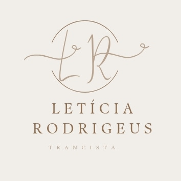

Leticia Tranças

 Marque através do whatsapp
Marque através do whatsapp
Marque através do whatsapp
Marque através do whatsapp
As tranças box braids são de origem africana e consiste no uso de uma fibra sintética trançada ou costurada junto aos cabelos para formar um penteado único.

As tranças de deusa são resultado de duas técnicas diferentes: o entrelaçamento dos fios, que acontece da mesma forma quando fazemos tranças, e a incorporação de apliques e alongamentos à elas para aumentar o volume e comprimento.
tem o início feito com o próprio cabelo e, logo depois, a fibra vai sendo colocada e entrelaçada aos fios naturais, tudo sem nó.
O estilo do Kanekalon é um aplique realizado com fibra de caráter sintético normalmente vinda do Oriente, que se assemelha ao cabelo normal, em relação à textura e visual.
A trança twist é uma técnica de penteado que consiste em entrelaçar duas mechas de cabelo, uma em volta da outra, unindo as partes para formar como se fosse em formato de trança.
Existem dois tipos de dreads: natural e sintético. O natural é feito a partir do próprio cabelo, usando cera de abelha e produtos especiais para compactar os fios. Já o sintético vem da fibra de plástico e deve ser trocado pelo menos uma vez por ano.